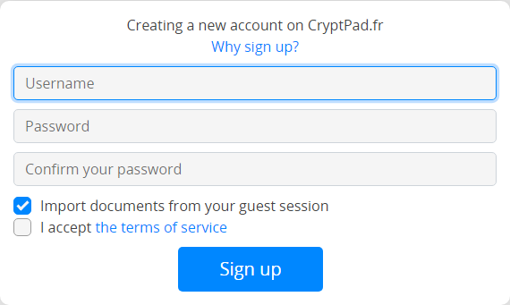

Cuenta de usuario#
CryptPad cifra los datos para que solo tu y tus colaboradores puedan leerlos. Por este motivo los administradores del servicio no pueden ver, recuperar ni restablecer su contraseña. Por lo tanto, es importante que anotes tu contraseña en un lugar seguro separado de tu cuenta CryptPad.
Nota
CryptPad utiliza la combinación de tu nombre de usuario y contraseña para identificarte. Los nombres de usuario no son únicos en CryptPad. Es posible crear varias cuentas con el mismo nombre de usuario y diferentes contraseñas.
Tipos de cuenta#
Hay tres tipos de cuentas en CryptPad:
Usuario invitado#
Los usuarios no registrados se identifican mediante un emoji de animal o avatar de mascota (en la parte superior derecha).
No es necesaria ninguna información personal para utilizar CryptPad sin registrarse. Sin embargo, la funcionalidad se reduce:
Acceso a todas las aplicaciones.
Compartir y colaborar en documentos.
Almacenamiento limitado a 3 meses de inactividad (contados por documento).
Almacenamiento de archivos no disponible para imágenes/vídeos/PDF/etc…
Acceso limitado a calendarios (solo calendarios compartidos por enlace).
Usuario registrado#
Los usuarios que han iniciado sesión se identifican mediante un avatar (en la parte superior derecha), ya sea su imagen de perfil si han configurado una o las primeras 2 letras de su nombre para mostrar.
Registrar una cuenta no requiere ninguna información personal, sólo un nombre de usuario y contraseña. Funcionalidad adicional para usuarios registrados:
Espacio de almacenamiento personal y permanente para documentos.
Almacenamiento de archivos para imágenes/vídeos/PDF/etc…
Más opciones para administrar documentos como propietario: agrega una contraseña, una fecha de vencimiento o una lista de acceso.
Organización de documentos en carpetas, carpetas compartidas, o con etiquetas y plantillas.
Creación de equipos.
Personalización de la página perfil y una lista de contactos para compartir documentos y chat con. Notificaciones de interacciones entre contactos.
Creación y gestión de calendarios.
Administración de cuentas#
Registro#
Para registrar una nueva cuenta, ve a la página de registro: Registrarse en la parte superior derecha de la página de inicio.

Completa la siguiente información:
Nombre de usuario: este es el nombre utilizado para iniciar sesión en CryptPad, es diferente del Nombre para mostrar visible por otros usuarios. El Nombre de usuario no se puede cambiar una vez creada la cuenta.
Nota
A diferencia de muchos servicios en línea, CryptPad no requiere una dirección de correo electrónico para registrarse. Es posible utilizar una dirección de correo electrónico como nombre de usuario, pero luego se utiliza como cualquier otra cadena de caracteres. Como se explica a continuación, este nombre de usuario no es visible para los administradores y nunca se utiliza para comunicarse sobre tu cuenta (especialmente para enviar correos electrónicos de "restablecimiento de contraseña", ya que no existen en CryptPad).
Contraseña: Se recomienda utilizar una contraseña segura. La contraseña se puede cambiar en configuración de usuario.

Peligro
Importante: Los administradores de CryptPad no pueden ver, recuperar ni restablecer su contraseña si la pierden u olvidan.
Términos de servicio: Lee y acepta los términos de servicio.
Opcional:
Importa documentos desde tu sesión anónima: Si has creado documentos como usuario no registrado, puedes importarlos a tu cuenta.
Iniciando sesión#
Para iniciar sesión en CryptPad, visita la página iniciar sesión (en la parte superior derecha de la página de inicio) y completa el nombre de usuario y la contraseña utilizados en el registro.
Opcional:
Importa documentos desde tu sesión anónima: Si has creado documentos como usuario no registrado, puedes importarlos a tu cuenta.
Notificaciones#
Usuarios registrados
CryptPad te notifica cuando tus contactos interactúan contigo. Las notificaciones se muestran mediante la campana al lado del avatar (en la parte superior derecha). Si tienes notificaciones sin leer, se llena la campana y se muestra un recuento.
Menú desplegable de campana:
Explorar notificaciones no leídas.
Eliminar una notificación con .
Abrir panel de notificaciones: ve todas las notificaciones y el historial de notificaciones.
En la página del panel de notificaciones:
Selecciona el tipo de notificación para ver:
Todo.
Solicitudes de contacto.
Comparte conmigo.
Historia.
: Elimina notificaciones.
Ajustes#
La configuración de la cuenta se encuentra en el menú de usuario (avatar en la parte superior derecha) > Ajustes.
Cuenta#
Nombre de cuenta: Nombre de usuario elegido al registrarse. Este nombre no se puede cambiar. Usuarios registrados
Clave de firma pública: utilizada por administradores de instancias y/o en instancias que ofrecen suscripciones. Estos son los únicos datos sobre tu cuenta que están disponibles para los administradores del servicio. Usuarios registrados
Idioma: Idioma utilizado en la interfaz de CryptPad. Para cambiar el idioma de CryptPad, elige un nuevo idioma en el menú desplegable. CryptPad está traducido al inglés y al francés por el equipo de desarrollo, y a otros idiomas por la community. Algunas traducciones pueden estar incompletas y/o contener errores.
Límite de descarga automática: Tamaño máximo en megabytes (MB) para cargar automáticamente elementos multimedia (imágenes, videos, pdf) incrustados en documentos. Los elementos más grandes que el tamaño especificado se pueden cargar manualmente. Utiliza "-1" para cargar siempre los elementos multimedia automáticamente.
Eliminación de cuenta: Opción para eliminar permanentemente su cuenta y todos sus documentos. Elimina tu cuenta y confirma. Usuarios registrados
Profile#
Display Name: Name displayed to other users, for example when you collaborate on documents. To change this name enter a new name and click on Save.
Avatar: A picture for your profile, shown alongside your display name. Logged in users
Badge: Show your role to other users, this can be "Administrator", "Support and moderation" or as well that you are a paid subscriber. Logged in users
Link to your website: Fill a valid URL to add a link to your personal website. Logged in users
Profile description: Text area where you can write a little bio using rich text formatting with the toolbar or by using the Markdown syntax. Logged in users
Seguridad y Privacidad#
Cerrar sesiones remotas: Cierra sesión en todas las sesiones excepto en aquella en la que está activada esta opción. (ver también Desconexión remota) Usuarios registrados
Autenticación de dos factores (2FA): protege tu cuenta con un código de verificación adicional proporcionado por una aplicación de autenticación de tu elección. Logged in users
Para activar 2FA:
Ingresa la contraseña de tu cuenta
Guarda el código de recuperación
Ajusta el código QR con una aplicación 2FA de tu elección (o copia la dirección y pégala en tu aplicación)
Ingresa el código de verificación para confirmar
Cambiar tu contraseña: Cambia la contraseña de tu cuenta. Ingresa tu contraseña actual y confirma la nueva contraseña escribiéndola dos veces
Enlaces seguros: cuando esta configuración está activa, el enlace en la barra de direcciones de tu navegador no proporciona acceso al documento a menos que el destinatario ya lo tenga en su CryptDrive. Esta configuración está activa de forma predeterminada. Se recomienda encarecidamente mantenerlo activo y utilizar el menú Compartir para copiar enlaces a documentos.
Peligro
CryptPad incluye las claves para descifrar tus documentos en sus enlaces. Cualquiera que tenga acceso a tu historial de navegación puede potencialmente leer tus datos. Esto incluye, extensiones de navegador intrusivas y navegadores que sincronizan su historial entre dispositivos. Las situaciones en las que otros pueden ver tu navegador, como compartir pantalla o capturas de pantalla, también son potencialmente riesgosas en términos de filtración de acceso a tus documentos. Habilitar "enlaces seguros" evita que las claves ingresen a tu historial de navegación o se muestren en tu barra de direcciones siempre que sea posible.
Comentarios: CryptPad puede enviar comentarios de uso anónimos al servidor para mejorar la experiencia del usuario. El contenido de los documentos nunca se comparte. Esta opción está deshabilitada de forma predeterminada.
Caché: CryptPad almacena partes de tus documentos en la memoria de tu navegador para ahorrar uso de la red y mejorar los tiempos de carga. Puedes desactivar el caché si tu dispositivo no tiene mucho espacio de almacenamiento libre. Por razones de seguridad, el caché siempre se borra cuando cierras sesión, pero puedes borrarlo manualmente si deseas recuperar espacio de almacenamiento en tu máquina.
Destruye todos los documentos de tu propiedad: Todos los documentos de los que tu seas el único propietario serán destruidos permanentemente
Apariencia#
Tema de color: determina el tema (claro u oscuro) utilizado en CryptPad. De forma predeterminada, esto sigue la configuración del sistema operativo y/o del navegador, pero también se puede configurar manualmente.
CryptDrive#
Redireccionamiento de la página de inicio: el redireccionamiento automático desde la página de inicio a la unidad cuando se inicia sesión ya no está habilitado de forma predeterminada
Consejos: Mensajes de ayuda en la interfaz de CryptPad. Haz click en Reiniciar para mostrarlos nuevamente si han sido descartados.
Almacenamiento de documentos en CryptDrive: administra si los documentos que visitas se almacenan automáticamente en tu CryptDrive. Si nadie posee un documento que tu agregas a tu CryptDrive, cuenta para tu cuota de almacenamiento.
Automático: Todos los documentos que visitas se almacenan en tu CryptDrive.
Manual (preguntar siempre): Si aún no almacenaste un documento, se te preguntará si deseas almacenarlo en tu CryptDrive.
Manual (nunca preguntar) Los documentos no se almacenan automáticamente en tu Cryptpad. La opción para almacenarlos quedará oculta.
Documentos de propiedad duplicados: cuando mueves tus documentos de propiedad a una carpeta compartida, se guarda una copia en tu CryptDrive para garantizar que conservas el control sobre ella. Puedes ocultar archivos duplicados. Sólo la versión compartida será visible, a menos que se elimine, en cuyo caso el original se mostrará en tu ubicación anterior.
Miniaturas: Para ayudar a navegar por CryptDrive en grid mode, CryptPad puede crear miniaturas de documentos y almacenarlas en el navegador. Esta opción está desactivada de forma predeterminada porque puede ralentizar el navegador en computadoras menos potentes. El botón Limpiar elimina todas las miniaturas existentes.
Copia de seguridad: Hay dos tipos de copias de seguridad disponibles.
Copia de seguridad solo guarda las claves de los documentos en CryptDrive, no su contenido. Esta opción está diseñada para guardar el acceso a los documentos y Restaurarlo en otra sesión.
Descargar mi CryptDrive guarda el contenido de todos los documentos en CryptDrive. Cuando sea posible, esto se hace en un formato que sea legible por otro software. Algunas aplicaciones producen archivos que sólo CryptPad puede leer.
Importar: Si los documentos se han creado como un usuario no registrado antes de iniciar sesión, se pueden importar a CryptDrive. Usuarios que han iniciado sesión
Eliminar historial: el historial de CryptDrive y las notificaciones se pueden eliminar para ahorrar espacio de almacenamiento. Esto no afecta al historial de documentos, que se pueden eliminar individualmente en el cuadro de diálogo propiedades.
Cursor#
Color del cursor: cambia el color del cursor. Esto se utiliza para identificarlo mientras colabora en documentos. También determina el color de su texto cuando color del autor está activo en los documentos de Código.
Compartir la posición de mi cursor: muestra u oculta la posición exacta de tu cursor a otros usuarios.
Mostrar la posición del cursor de otros usuarios (BETA): muestra u oculta la posición de los cursores de otros usuarios.
Texto enriquecido#
Configuración de usuario para la aplicación Texto enriquecido.
Ancho máximo del editor: cambia entre el modo de página (predeterminado) que limita el ancho del editor de texto y el uso del ancho completo de la pantalla.
Revisión ortográfica: habilita la revisión ortográfica en documentos de texto enriquecido. Los errores de ortografía están subrayados y las correcciones sugeridas están disponibles a través de Ctrl +
Click derechoen la palabra a corregir.Notificaciones de comentarios: deshabilita las notificaciones cuando otro usuario responda a uno de tus comentarios.
Abrir enlaces con el primer click: abre enlaces incrustados al hacer click sin la ventana emergente de vista previa.
Código#
Configuración de usuario para la aplicación Código / Markdown.
Sangría del editor de código (espacios): elige la cantidad de espacios para cada nivel de sangría.
Sangría usando tabulaciones (en lugar de espacios): Inserta tabulaciones en lugar de espacios con la tecla Tab.
Cerrar corchetes automáticamente: Inserta automáticamente un carácter de cierre
)cuando los corchetes se abren con((también funciona con[,',").Tamaño de fuente en el editor de código: establece el tamaño del texto en el editor de código.
Revisión ortográfica: subraya los errores ortográficos en el editor de código; las sugerencias de corrección están disponibles haciendo click derecho en la palabra a corregir.
Kanban#
Configuración de usuario para la aplicación Kanban.
Filtro de etiquetas: cómo deseas que actúe el filtro de etiquetas al seleccionar varias etiquetas: mostrar solo tarjetas que contengan todas las etiquetas seleccionadas (AND) o mostrar tarjetas que contengan cualquiera de las etiquetas seleccionadas (OR).
Notificaciones#
Configuración de usuario para las notificaciones.
Notificaciones de calendario: activa/desactiva todas las notificaciones de los próximos eventos del calendario.
Suscripción#
(sólo en cryptpad.fr)
Redirige a la página de la cuenta.